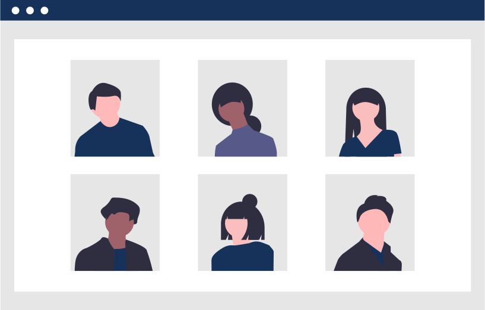

Turning Developers Into Work-Ready, Elite Talent

Pipeline Of Talent
Select from a pool of young developers that are used to a team-orientated and deadline-driven environment as they develop your company’s current and future digital strategy

De-Risk Your Recruitment
Save time & money by selecting the developers that are a perfect match for your company’s culture and its digital needs

Hire Workplace Ready Talent
Enjoy the immediate productivity of developers that are acclimated to your company. They are equipped with all the hard and soft skills embodied by your company